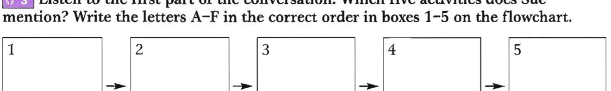
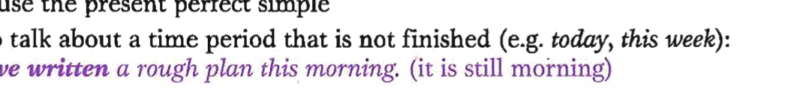
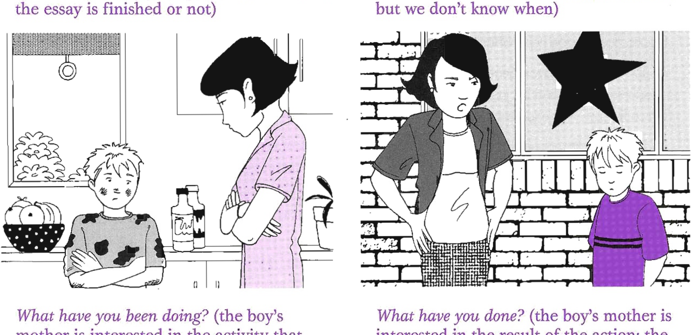
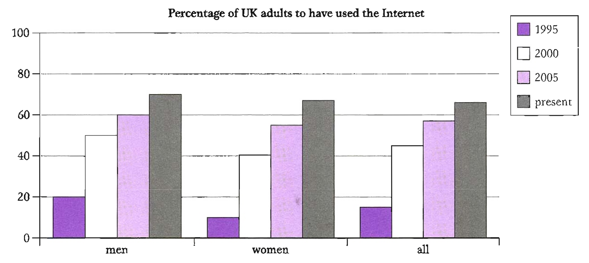

Pre-listening: Assignment writing steps
You are going to hear two university students, Carl and Sue, talking about an assignment. Before you listen, look at the list of activities (A–F). Put the activities in the order which you think is best when writing an assignment.
- A — make notes
- B — start to write
- C — do research
- D — make a plan
- E — re-read books
- F — get a book list
Listen — Track 05 (first part)
Listen to the first part of the conversation. Which five activities does Sue mention? Write the letters A–F in the correct order in boxes 1–5 on the flowchart.
Track 05 — Carl and Sue's conversation
Context listening — university assignment

Write the activity letter (A–F) in each box in the order Sue mentions them
Listen — Track 05 (second part): Fill in the gaps
Analyse your answers from Exercise 3
Look at your answers to Exercise 3 and find examples of each of the following. Write the sentence number (1–4).
Which tense is used in each of the examples a–d above?
B1 — Present Perfect Simple
| Form | Example |
|---|---|
| + have/has + past participle | She's started the assignment. |
| − have/has not + past participle | I haven't started the assignment. |
| ? Have/Has … + past participle? | Have you started the assignment? |
We use the present perfect simple:
- To talk about a time period that is not finished (e.g. today, this week):
I've written a rough plan this morning. (it is still morning)
The action happened within a time period that is still ongoing (THIS MORNING → NOW)
- To show that something happened at some point in the past before now — we don't state when:
I've collected plenty of information. (at some point before now)
Time expressions often used: everneverbeforeup to nowstillso far
It's the longest I've ever had to write. - To talk about a present situation which started in the past, usually with for/since:
I've worked really hard for the last two weeks.A situation that started in the past and continues to NOW (← 2 WEEKS →)
Use for with a length of time (e.g. for two hours, for three days) and since with a point in time (e.g. since 2001, since Monday, since I was four). - To talk about something that happened at an unstated time but is connected to the present:
I've read all the books on the reading list. (I have the notes now)
Time expressions: recentlyjustalreadyyet
I've just got up. Have you written your assignment yet?
I wasted a lot of time last week. (not: I have wasted a lot of time last week)
- Links the past with the present:
I've made quite a lot of notes. - Does not talk about a specific time:
Have you read the leaflet? - Uses time expressions that show the time period is unfinished:
I've read six articles this week.
- Only talks about the past:
I made notes on the most important things. - States a specific past time:
I read the leaflets when I was in the library. - Uses time expressions that show the time is finished:
I read five books last week.
Position of time expressions with the present perfect:
- Between the auxiliary and main verb: recentlyalreadyalwayseverjustnever
I've already written the notes. I've just finished my essay. - After the main verb: all my lifeyetbeforefor agessince 2003
I've felt tired for weeks. I haven't flown before.
Grammar extra: This is the first time etc.
We use the present perfect tense with the following structures: it/this/that is the first / the second / the best / the only / the worst …
It's the first time I've ever had to write such a long assignment.
Is this the only time you've travelled abroad?
That's the sixth cup of coffee you've had today.
B2 — Present Perfect Continuous
| Form | Example |
|---|---|
| + have/has been + verb + -ing | I've been studying really hard. |
| − have/has not been + verb + -ing | He hasn't been studying really hard. |
| ? Have/Has … been + verb + -ing? | Have you been studying really hard? |
We can use either the present perfect simple or continuous to say how long a situation or activity has been going on (often with for or since):
- I've felt tired for weeks.
I've been feeling tired since I started this course.
- Emphasises how long:
I've been reading for the past two weeks. - Focuses on the activity itself (does not show whether completed):
I've been writing my essay. (we don't know if finished)
- Says how many times:
I've read three articles. - Focuses on the result or completion:
I've written my essay. (the essay is finished)

Left: What have you been doing? — interested in the activity. Right: What have you done? — interested in the result (the broken window).
I've known them since I was a child. (not: I've been knowing them…)
Tick (✓) correct underlined verbs, correct the wrong ones — university application letter
As you 3 already saw in Section A of this application, I have a good academic record and I 4 just received the results of my recent exams, all of which 5 have been excellent.
In addition, your university attracts me because I enjoy sports and I 6 have read in your prospectus about the large number of sports on offer. Last year I 7 have represented my school at badminton and I 8 played in football teams since I was eleven. I 9 have recently joined a basketball team which competes at a national level.
I 10 did not travel abroad much yet, although as a young child I 11 have been to Singapore and Hong Kong with my family. I realize that I 12 have not spent much time away from home up to now, but am keen to become more independent.
Look at the chart and fill in the gaps — past simple or present perfect simple

Percentage of UK adults to have used the Internet (1995, 2000, 2005, present) — broken down by men, women, and all adults
Underline the correct form — email about a seminar presentation
Click the correct form for each numbered item:
Track 05 — Listening Section 1
Listen for Questions 1–10
Questions 1–3 — Choose the correct letter A, B or C
Questions 4–10 — Complete the notes
Write NO MORE THAN THREE WORDS AND/OR A NUMBER for each answer.